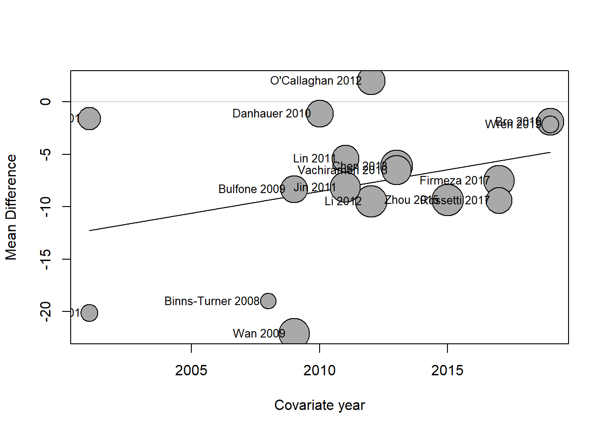
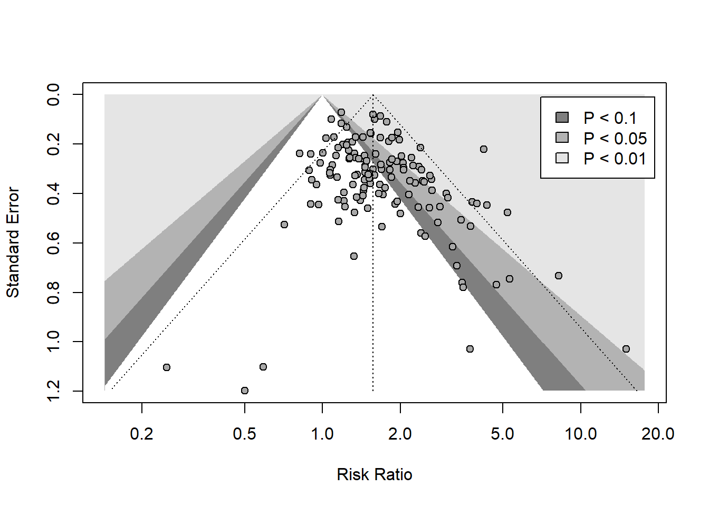

9Subgroup Analysis, Meta-Regression, and Complex Data
When conducting meta-analysis, frequently we will encounter heterogeneity in the pooled measures of effect, and it is valuable to explore possible factors that could explain this identified heterogeneity. This can be accomplished through subgroup analysis and meta-regression. Additionally, we should explore possible indicators of publication bias or other small-study biases and effects in our meta-analysis datasets. Finally, often we will encounter complex data structures and issues when conducting meta-analysis, and we will explore different approaches that can be used to account for or address these complexities in our analysis.
9.1 Subgroup Analysis
Subgroup analysis, also known as moderator analysis, can be conducted to determine if specific study-related factors might explain some of the heterogeneity in our analysis. We essentially conduct one or more meta-analyses that are stratified by categorical variables of interest. Any such analyses should be pre-specified and identified in the review protocol. We should keep these analyses to a minimum, and focus on only those that are of most importance and have a strong rationale. For example, we may want to conduct a subgroup analysis to examine differences in pooled estimates across two or more variations of the intervention (or exposure), different control groups, study risk-of-bias ratings, study design, population characteristics (e.g., age group), or setting.
The process of subgroup analysis involves calculating a separate pooled measure of effect within each subgroup, then comparing the pooled estimates across groups with a statistical test. when comparing estimates across subgroups, an omnibus \(Q\) test is used, which compares whether all subgroup pooled estimates are equal. We have the option of calculating \(\tau^2\) separately within each group, or assuming a common estimate of \(\tau^2\) that is applied for each subgroup (the latter is recommended if there are only 5 or fewer studies in a subgroup).
However, subgroup analyses have several limitations. They have low power to detect differences with small numbers of studies in each group, pooled estimates in each group will have lower precision, an absence of a detectable difference does not mean that the groups are equivalent, and any observed differences are only observational (and could be confounded by biases or other factors). At least 10 studies are recommended if conducting a subgroup analysis.
To conduct subgroup analysis in R, we can specify the subgroup option with any of the meta-analysis functions in the meta package.
Subgroup Analysis Example
We will re-load the same dataset from the last session that contained 136 studies used in a meta-analysis of the effectiveness of nicotine replacement therapy vs. control for smoking cessation (Hartmann‐Boyce et al. 2018), as prepared by White et al. in the metadat repository.
Code
pacman::p_load( rio, # load in an Excel file here, # loading data using relative path tidyverse, # data management meta, # meta-analysis DT # to visualize the dataset online)Hartmann_2018 <-import(here("assets", "Hartmann_2018.xlsx"))Hartmann_2018 |>datatable(rownames =FALSE,options =list(columnDefs =list(list(className ='dt-center', targets =0:4))))
We can see that there is a variable called treatment reflecting the type of nicotine replacement therapy assessed. We will conduct a subgroup analysis to compare differences between the types of treatments.
Code
Hartmann_meta <- Hartmann_2018 |>metabin(event.e = x.nrt,n.e = n.nrt, event.c = x.ctrl, n.c = n.ctrl, studlab = study,sm ="RR",method ="MH", random =TRUE,fixed =FALSE, method.tau ="PM",hakn =TRUE,MH.exact =TRUE,subgroup = treatment, # specify our subgroup variabletau.common =FALSE, # calculate tau separately for each subgrouptitle ="Nicotine Replacement Therapy and Smoking Cessation")Hartmann_meta
Review: Nicotine Replacement Therapy and Smoking Cessation
Number of studies combined: k = 136
Number of observations: o = 64640
Number of events: e = 8889
RR 95%-CI t p-value
Random effects model 1.5735 [1.4798; 1.6731] 14.61 < 0.0001
Quantifying heterogeneity:
tau^2 = 0.0411 [0.0155; 0.0861]; tau = 0.2028 [0.1245; 0.2934]
I^2 = 38.2% [23.8%; 49.9%]; H = 1.27 [1.15; 1.41]
Test of heterogeneity:
Q d.f. p-value
218.60 135 < 0.0001
Results for subgroups (random effects model):
k RR 95%-CI tau^2
treatment = gum 56 1.4907 [1.3529; 1.6424] 0.0423
treatment = patch 51 1.6243 [1.4675; 1.7978] 0.0359
treatment = inhalator 4 1.8521 [1.1959; 2.8684] 0
treatment = intranasal spray 4 1.9881 [1.3830; 2.8580] 0
treatment = tablets/lozenges 8 1.7175 [1.2230; 2.4118] 0.0965
treatment = oral spray 1 2.4752 [1.2396; 4.9423] --
treatment = choice of product 7 1.4198 [1.1907; 1.6929] 0.0075
treatment = patch and inhalator 1 1.0686 [0.5747; 1.9870] --
treatment = patch and lozenge 1 1.8256 [1.0064; 3.3117] --
treatment = patch and gum 2 1.2975 [0.0004; 3977.9193] 0.4485
treatment = patch, gum, and lozenge 1 15.0000 [1.9993; 112.5414] --
tau Q I^2
treatment = gum 0.2057 90.42 39.2%
treatment = patch 0.1895 65.20 23.3%
treatment = inhalator 0 1.90 0.0%
treatment = intranasal spray 0 1.62 0.0%
treatment = tablets/lozenges 0.3107 23.81 70.6%
treatment = oral spray -- 0.00 --
treatment = choice of product 0.0867 10.40 42.3%
treatment = patch and inhalator -- 0.00 --
treatment = patch and lozenge -- 0.00 --
treatment = patch and gum 0.6697 1.78 43.7%
treatment = patch, gum, and lozenge -- 0.00 --
Test for subgroup differences (random effects model):
Q d.f. p-value
Between groups 17.95 10 0.0558
Details on meta-analytical method:
- Mantel-Haenszel method
- Paule-Mandel estimator for tau^2
- Q-Profile method for confidence interval of tau^2 and tau
- Hartung-Knapp (HK) adjustment for random effects model (df = 135)
We can see that there are some differences in the pooled RR estimates across subgroups, but most groups contain very few studies. We could re-run our analysis and include only the four sub-groups which have more than 5 studies for a more reliable comparison.
Code
Hartmann_meta <- Hartmann_2018 |>filter(treatment =="gum"| treatment =="patch"| treatment =="tablets/lozenges"| treatment =="choice of product") |>metabin(event.e = x.nrt,n.e = n.nrt, event.c = x.ctrl, n.c = n.ctrl, studlab = study,sm ="RR",method ="MH", random =TRUE,fixed =FALSE, method.tau ="PM",hakn =TRUE,MH.exact =TRUE,subgroup = treatment, # specify our subgroup variabletau.common =FALSE, # calculate tau separately for each subgrouptitle ="Nicotine Replacement Therapy and Smoking Cessation")Hartmann_meta
Review: Nicotine Replacement Therapy and Smoking Cessation
Number of studies combined: k = 122
Number of observations: o = 61062
Number of events: e = 8342
RR 95%-CI t p-value
Random effects model 1.5543 [1.4587; 1.6562] 13.75 < 0.0001
Quantifying heterogeneity:
tau^2 = 0.0395 [0.0143; 0.0851]; tau = 0.1988 [0.1195; 0.2917]
I^2 = 38.9% [23.8%; 51.0%]; H = 1.28 [1.15; 1.43]
Test of heterogeneity:
Q d.f. p-value
198.00 121 < 0.0001
Results for subgroups (random effects model):
k RR 95%-CI tau^2 tau Q
treatment = gum 56 1.4907 [1.3529; 1.6424] 0.0423 0.2057 90.42
treatment = patch 51 1.6243 [1.4675; 1.7978] 0.0359 0.1895 65.20
treatment = tablets/lozenges 8 1.7175 [1.2230; 2.4118] 0.0965 0.3107 23.81
treatment = choice of product 7 1.4198 [1.1907; 1.6929] 0.0075 0.0867 10.40
I^2
treatment = gum 39.2%
treatment = patch 23.3%
treatment = tablets/lozenges 70.6%
treatment = choice of product 42.3%
Test for subgroup differences (random effects model):
Q d.f. p-value
Between groups 3.41 3 0.3327
Details on meta-analytical method:
- Mantel-Haenszel method
- Paule-Mandel estimator for tau^2
- Q-Profile method for confidence interval of tau^2 and tau
- Hartung-Knapp (HK) adjustment for random effects model (df = 121)
Once we remove the groups with few studies, we can see that there is no strong (significant) evidence of a difference in the size of the treatment effect based on the type of therapy.
9.2 Meta-Regression
Meta-regression is another technique we can use to evaluate possible factors associated with between-study heterogeneity in the measures of effect. Meta-regression models are mixed-effect regressions that have terms to account for the sampling error \(\epsilon_j\) and the between-study heterogeneity \(\zeta_j\), and one (or more) beta parameters representing our predictor variables of interest. For study \(j\), we can express such a model as:
A subgroup analysis is special case of this regression model, where we include a categorical predictor variable as our covariate \({x}_j\). When we evaluate continuous predictors (e.g., publication year), a weighted least squares approach is used to estimate the beta coefficient that best fits the data. In addition to estimating the effect of the predictor of interest, the model also calculates an \(R^2\) value that represents the proportion of between-study variation that is explained by the predictor.
Similar to subgroup analysis, usually at least 10 studies are recommended to conduct meta-regression. Meta-regression has many of the same limitations as subgroup analysis. Additionally, one should not conduct analysis of a predictor variables containing aggregated data from the studies (e.g., mean age in each study), as this type of analysis can be affected by ecological bias.
In the R meta package, we can conduct meta-regression on our meta-analysis object (output) using the metareg function.
Meta-Regression Example
To illustrate how to conduct a meta-regression, we will reload data on the effect of music interventions + standard care vs. standard care alone to reduce anxiety levels, from a systematic review of music interventions to improve various health outcomes in people with cancer (Bradt et al. 2021).
We will examine whether study publication year as a continuous variable might explain any of the heterogeneity in the measure of effect across studies.
Mixed-Effects Model (k = 17; tau^2 estimator: REML)
tau^2 (estimated amount of residual heterogeneity): 32.4437 (SE = 13.9920)
tau (square root of estimated tau^2 value): 5.6959
I^2 (residual heterogeneity / unaccounted variability): 96.47%
H^2 (unaccounted variability / sampling variability): 28.32
R^2 (amount of heterogeneity accounted for): 1.74%
Test for Residual Heterogeneity:
QE(df = 15) = 217.2438, p-val < .0001
Test of Moderators (coefficient 2):
F(df1 = 1, df2 = 15) = 1.5686, p-val = 0.2296
Model Results:
estimate se tval df pval ci.lb ci.ub
intrcpt -842.7405 666.6950 -1.2641 15 0.2255 -2263.7674 578.2863
year 0.4150 0.3314 1.2524 15 0.2296 -0.2913 1.1213
---
Signif. codes: 0 '***' 0.001 '**' 0.01 '*' 0.05 '.' 0.1 ' ' 1
We can see in the results output that \(I^2\), representing the residual heterogeneity, is very high (>96%). The test for residual heterogeneity also indicates there is still substantial heterogeneity present after accounting for publication year.
The \(R^2\) value is also only 1.7%, indicating the the publication year variable explain very little to no variability in effects across studies. The moderator test also indicates that this variable is not statistically significant (its 95% CI also crosses the null of no effect). If this variable was significant, we could say that for each additional year, the mean difference for a study is expected to increase by ~0.42 units.
We can also visualize the results of meta-regression analyses using a bubble plot.
Code
bubble(Bradt_reg, studlab =TRUE)

Subgroup Analysis and Meta-Regression Exercise
We will load data from the Young et al. (2019) systematic review and meta-analysis of the effectiveness of food handler training and education interventions.
Using these data, first conduct a subgroup analysis to examine the difference between RCTs and non-randomized studies for the behaviour outcome. Given a small number of RCTs, use a common estimate of \(\tau^2\).
What is the \(I^2\) in each subgroup?
What is the evidence that the overall SMD in each group is different?
Can you create a forest plot for this analysis that includes these two subgroups?
Now conduct a meta-regression to examine whether publication year of the study is associated with any of the variability in the behaviour outcome. How would you interpret the results?
Now conduct another meta-regression, but instead of publication year, examine document type (journal or thesis/dissertation) as a predictor. How would you interpret those results?
9.3 Publication Bias
Publication bias is a major concern in systematic reviews. It refers to the probability that studies are more likely to be published, and specific outcomes and results in a study are more likely to be reported, if the findings are statistically significant or confirm the hypothesis of interest. Publication bias is one of several non-reporting biases that might be present in a systematic review. Others include citation bias, time-lag bias, multiple publication bias, language bias, and outcome reporting bias.
Funnel plots can be used to visualize the possibility of publication bias in a meta-analysis. They are a scatter plot of the measures of effect of each included study against their standard error. If publication bias is not present, we would expect a funnel shape, with more precise (larger) studies clustering at the top and smaller, less precise studies scattered more widely at the bottom. Bias due to missing results presents as funnel plot asymmetry, where smaller studies without statistically significant results are missing on the bottom of the plot.
However, asymmetry can be due to a variety of small-study effects, not just publications bias (e.g., higher risk of bias in smaller studies, true heterogeneity, spurious relationships, or chance). For this reason, it is recommended to use contour-enhanced funnel plots that include shaded regions for statistical significance thresholds (e.g., P = 0.01, 0.05) to identify if the missing pattern is likely due to publication bias or other small-study effects. There are various statistical tests for funnel plot asymmetry to assess whether the associated between effect sizes and precision is greater than expected to occur by chance (Sterne et al. 2011). However, these tests have many limitations. For example, they should not be used whether there are less than 10 studies and when the studies all have a similar sample size. The performance and reliability on the tests on observational studies is also not well researched.
One such publication bias (small-study effects) test is Egger’s regression test. However, this test should only be used on continuous outcomes. In can be implemented in the R meta package using the metabias function and the method.bias = "linreg" option. For SMD outcomes, it is recommended to use alternative method.bias = "Pustejovsky" option when conducting the test, which uses a different method of calculating the SE in each study. This method requires specification of the sample size for each comparison group. For dichotomous outcomes, the Harbord test or Peters test can be used with method.bias = "Harbord" and method.bias = "Peters", although there are other options as well. Many of these tests may not perform optimally or reliably when heterogeneity is very high.
If publication bias or other small-study effects are suspected, there are various statistical methods that can be used to examine the influence of the bias on the pooled measure of effect. The most popular of these methods is called the trim and fill method. This method imputes “missing” studies until the funnel is symmetrical. The pooled effect calculated using this method is considered bias-corrected. This method is also not reliable when heterogeneity is high. There are various other bias-adjustment methods available but no consensus on which approach is best.
Publication Bias Example
We will re-examine the meta-analysis of the effectiveness of nicotine replacement therapy vs. control for smoking cessation (Hartmann‐Boyce et al. 2018). We will conduct an overall pooled meta-analysis combining all therapies together, then assess for possible small-study effects using a contour-enhanced funnel plot.
Review: Nicotine Replacement Therapy and Smoking Cessation
Number of studies combined: k = 136
Number of observations: o = 64640
Number of events: e = 8889
RR 95%-CI t p-value
Random effects model 1.5735 [1.4798; 1.6731] 14.61 < 0.0001
Quantifying heterogeneity:
tau^2 = 0.0411 [0.0155; 0.0861]; tau = 0.2028 [0.1245; 0.2934]
I^2 = 38.2% [23.8%; 49.9%]; H = 1.27 [1.15; 1.41]
Test of heterogeneity:
Q d.f. p-value
218.60 135 < 0.0001
Details on meta-analytical method:
- Mantel-Haenszel method
- Paule-Mandel estimator for tau^2
- Q-Profile method for confidence interval of tau^2 and tau
- Hartung-Knapp (HK) adjustment for random effects model (df = 135)
Code
col.contour =c("gray50", "gray70", "gray90") # set custom contour coloursfunnel.meta(Hartmann_meta, contour =c(0.9, 0.95, 0.99), # set contour P value regionscol.contour = col.contour) # apply custom contour colour# Add legend in top right position based on x and y coordinateslegend(x =7, y =0.01, legend =c("P < 0.1", "P < 0.05", "P < 0.01"),fill = col.contour)

We can see most of the studies with greater precision have clustered at the top, with many in the statistically significant regions. At the bottom, there are a handful of smaller studies, with only one being in the very significant region. Based on this plot, there does not appear to be a strong indication of small-study biases, though if anything, we could be missing some medium-sized studies in the non-significant region. We will now conduct a Peters test for asymmetry.
Code
metabias(Hartmann_meta, method.bias ="Peters")
Review: Nicotine Replacement Therapy and Smoking Cessation
Linear regression test of funnel plot asymmetry
Test result: t = 1.33, df = 134, p-value = 0.1862
Sample estimates:
bias se.bias intercept se.intercept
13.8134 10.3970 0.4256 0.0401
Details:
- multiplicative residual heterogeneity variance (tau^2 = 6.8892)
- predictor: inverse of total sample size
- weight: inverse variance of average event probability
- reference: Peters et al. (2006), JAMA
We can see that the test P value is 0.186, which does not suggest that small-study effects are present, but we cannot rule them out with only this test. For illustration purposes, we will conduct a trim and fill anlaysis to examine the possible magnitude of possible missing studies.
Review: Nicotine Replacement Therapy and Smoking Cessation
Number of studies combined: k = 159 (with 23 added studies)
Number of observations: o = 72976
Number of events: e = 9512
RR 95%-CI t p-value
Random effects model 1.4659 [1.3596; 1.5806] 10.03 < 0.0001
Quantifying heterogeneity:
tau^2 = 0.1113 [0.0605; 0.1914]; tau = 0.3337 [0.2460; 0.4375]
I^2 = 50.2% [40.2%; 58.6%]; H = 1.42 [1.29; 1.55]
Test of heterogeneity:
Q d.f. p-value
317.47 158 < 0.0001
Details on meta-analytical method:
- Inverse variance method
- Paule-Mandel estimator for tau^2
- Q-Profile method for confidence interval of tau^2 and tau
- Hartung-Knapp (HK) adjustment for random effects model (df = 158)
- Trim-and-fill method to adjust for funnel plot asymmetry
We can see that data from 23 missing studies were imputed. As expected, the updated RR is slightly more conservative compared to the original RR estimate. We can also produce a new funnel plot with the imputed missing studies.
We can see the new studies (circles with no fill colour) have been added on the left side of the plot, representing mostly medium-sized studies that would be expected to show no intervention effect.
Publication Bias Exercise
For this exercise, examine possible publication bias in the meta-analysis of the effect of music interventions + standard care vs. standard care alone to reduce anxiety levels (Bradt et al. 2021). You can use the same, saved Bradt_meta object from the earlier example.
Produce a contour-enhanced funnel plot. Is there evidence of asymmetry?
Based on the contour regions and meta-analysis results, could this be due to publication bias or other small-study effects?
Conduct Egger’s regression test. How would you interpret the result?
Conduct a trim-and-fill analysis. How many “missing studies” were added, and what impact does the missing study imputation have on the overall MD?
9.4 Complex Data Issues
In an earlier section Chapter 6, we introduced unit-of-analysis issues. This section will provide some additional details on how to address some of these issues using statistical techniques. We will examine how to adjust standard errors in clustered studies and studies that report more than one outcome of the same type. We will also examine different methods of combining multiple intervention/exposure comparison groups.
9.4.1 Cluster Trial Adjustments
Cluster trials can present an issue if an intervention is applied at the cluster level (e.g., school), but the outcomes are measured and reported on individual participants within the cluster (e.g., students) and the clustering is not accounted for in the analysis. In this case, the reported results can be adjusted for a design effect as per the following formula:
\[
DEFF = 1 + (M - 1)ICC
\]
In this formula, \(M\) refers to the average cluster size in the study, and \(ICC\) is the intra-class correlation coefficient. This value is rarely reported, so would need to be estimated from a similar study or other literature. The sample size in each group can then be divided by the design effect to obtain proper estimates. For dichotomous outcomes, both the number of events and sample size should be divided by this effect. Alternatively, the standard error of the measure of effect of the study can be multiplied by the square root fo the design effect.
Cluster Trial Adjustment Example
In the Young et al. (2019) systematic review and meta-analysis of the effectiveness of food handler training and education interventions, several cluster trials were included and a design effect was used to adjust the standard errors of studies that did not report the correct analysis of those trials. A common ICC value of 0.1 was used for the formula, based on a study of similar outcomes in the literature.
For example, one of the studies reported an analysis of school food handler knowledge outcomes, with randomization conducted at the school level. There were 33 food handlers in the intervention group and 46 in the control group, with 8 schools in each group. Given these data, the design effect (DEFF) was calculated as:
Code
M <- (33+46)/(8+8)ICC <-0.1DEFF <-1+ (M-1)*(ICC)DEFF
[1] 1.39375
9.4.2 Multiple Outcomes in the Same Study
If a study reports multiple outcomes of the same type, such that they would be included in the same meta-analysis, the outcomes would not be independent and this extra level of variation should be accounted for. This could be due to multiple sub-groups of populations in the same study (hierarchical clustering) or multiple measurements on the same participants in the same study (correlated effects). The most common approaches to address this are as follows:
Averaging of effects approach: in this method, we take a weighted average of the multiple similar outcomes within a study, to produce one estimate per study per meta-analysis. For correlated effects, this requires an estimate of the correlation between the two or more outcome measurements being combined.
Three-level regression model: this method is appropriate for hierarchical clustering only, not correlated effects. It adds another random-effect for the outcomes being clustered within studies.
Robust variance estimation: uses a special method of calculating the standard error that is consistent even when assumptions (e.g., independence of observations) are not met.
Correlated and hierarchical effects models: use the robust variance approach along with multilevel modelling to account for both correlated and hierarchical effects in the same model.
Additional reading on these approaches and how to implement them in R is available in the Doing Meta-Anlaysis in R online book. Note that these advanced methods may not be reliable when the number of studies included in the analysis is very small.
9.4.3 Multiple Comparison Groups
If a study reports a comparison of two or more intervention (or exposure) groups to a control or comparison group, we need to avoid double-counting those outcomes in the analysis. For example, a study might report separate comparison data for different genders or age groups, or different variations (e.g., doses) of an intervention. There are different approaches to address this issue:
Pick the most relevant of the intervention/exposure groups and exclude the others. However, the decision of what is most relevant must be justified and this results in a loss of data.
Split the sample size of the common control/comparison group: for example, if we had two variations of an intervention compared to a common control group with 200 participants, we would split the control group into two groups of size 100. However, this approach still results in the outcomes being correlated.
Combine the two (or more) intervention/exposure groups into a weighted average. This is the preferred approach and is discussed and illustrated below.
If there are many studies with multiple comparison groups, consider a network meta-analysis.
To combine two groups together, the sample sizes for the two groups can simply be added together. The means and SDs can be combined with the following formulas:
Thankfully, we can use an R function to automate this calculation.
Code
pool.groups =function(n1, n2, m1, m2, sd1, sd2) { n1 = n1 n2 = n2 m1 = m1 m2 = m2 sd1 = sd1 sd2 = sd2if (is.numeric(n1) ==FALSE) {stop("'n1' must by of type numeric().") }if (is.numeric(n2) ==FALSE) {stop("'n2' must by of type numeric().") }if (n1 <1| n2 <1) {stop("'n1' and 'n2' must both the greater than 0.") }if (is.numeric(m1) ==FALSE) {stop("'m1' must by of type numeric().") }if (is.numeric(m2) ==FALSE) {stop("'m2' must by of type numeric().") }if (is.numeric(sd1) ==FALSE) {stop("'sd1' must by of type numeric().") }if (is.numeric(sd2) ==FALSE) {stop("'sd2' must by of type numeric().") } Npooled = n1 + n2 Mpooled = (n1 * m1 + n2 * m2)/(n1 + n2) SDpooled =sqrt(((n1 -1) * sd1^2+ (n2 -1) * sd2^2+ (((n1 * n2)/(n1 + n2)) * (m1^2+ m2^2-2* m1 * m2)))/(n1 + n2 -1))return(data.frame(Mpooled, SDpooled, Npooled))}
Using our new pool.groups function, we can now combined two groups. Suppose we had two similar interventions in one study with the following parameters: sample size of 50 in each group, mean 1 = 2.0, SD 1 = 1.5, mean 2 = 2.5, SD 2 = 2.3):
If combining more than two groups, we would first combine two groups together, then combine the results of that new combined group with the third group, and so on.
Combining Groups Example
In practice, if we will be combining interventions groups like this, we will want to create a new dataframe to analyze with the combined groups. The saved combined values can then be inserted into the new dataframe. For example:
In this example, we want to combine the two training interventions in Study 3. We use the pool.groups function.
Code
# Reference the required values below using the respective row numberscombined <-pool.groups(n1 = data[3,]$treat_n, n2 = data[4,]$treat_n,m1 = data[3,]$treat_mean, sd1 = data[3,]$treat_SD,m2 = data[4,]$treat_mean, sd2 = data[4,]$treat_SD)
We can now create a new version of the dataframe, remove one of the treatment rows, and enter the new combined values in place of the previous intervention values.
Code
# First create the new dataframe with 1 row per studydata_combined <- data |>group_by(study_ID) |>slice_head() |>ungroup()# Update Study 3's description and values with the new combined valuesdata_combined$intervention["study_ID"=3] <-"Training-combined"data_combined$treat_mean["study_ID"=3] <- combined$Mpooleddata_combined$treat_SD["study_ID"=3] <- combined$SDpooleddata_combined$treat_n["study_ID"=3] <- combined$Npooleddata_combined
Bradt, Joke, Cheryl Dileo, Katherine Myers-Coffman, and Jacelyn Biondo. 2021. “Music Interventions for Improving Psychological and Physical Outcomes in People with Cancer.”Cochrane Database of Systematic Reviews, no. 10. https://doi.org/10.1002/14651858.CD006911.pub4.
Hartmann‐Boyce, Jamie, Samantha C. Chepkin, Weiyu Ye, Chris Bullen, and Tim Lancaster. 2018. “Nicotine Replacement Therapy Versus Control for Smoking Cessation.”Cochrane Database of Systematic Reviews, no. 5. https://doi.org/10.1002/14651858.CD000146.pub5.
Young, Ian, Judy Greig, Barbara J. Wilhelm, and Lisa A. Waddell. 2019. “Effectiveness of Food Handler Training and Education Interventions: A Systematic Review and Meta-Analysis.”Journal of Food Protection 82 (10): 1714–28. https://doi.org/10.4315/0362-028X.JFP-19-108.